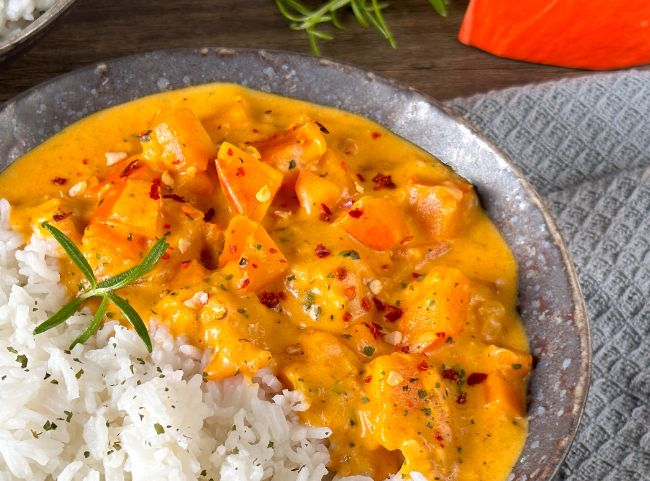

Kürbis-Curry mit Kokosmilch
Zutaten:
- 600 g Hokkaido-Kürbis (entkernt)
- 500 ml Kokosmilch
- 150 g Anana (geraspelt)
- 1 Möhre
- 1 Zwiebel
- 1 Knoblauchzehe
- 1 EL Kokosöl
- 1 TL Currypaste
- 1 TL Paprikapulver
- 1 TL Koriander
- Salz
- Pfeffer
Zubereitung
- Wasche den Hokkaido, entkerne ihn und schneide ihn in Würfel.
- SChäle die Möhre, die Zwiebel und den Knoblauch. Schneide sie in kleine Würfel.
- Dünste die Zwiebel- und Knoblauchwürfel in Kokosöl an.
- Gib anschließen die Kürbis- und die Möhrenwürfel hinzu. Brate sie für 10 Minuten mit.
- Würze das Gemüse mit Salz, Pfeffer und Paprikapulver.
- Füge die Ananas dazu und gieße die Kokosmilch an. Lass nun alles für 15 Minuten köcheln.
- Rühre zum Schluss die Currypaste und den Koriander unter.
- Koche das Kürbis Curry nochmal kurz an. Dann kannst du es mit Reis oder einer anderen Beilage servieren.
- Wer mag, streut sich als Schärfe noch ein paar Chiliflocken darüber.

Kürbis-Curry mit Kokosmilch.